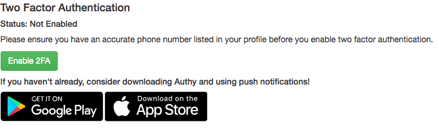
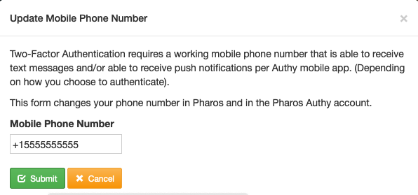
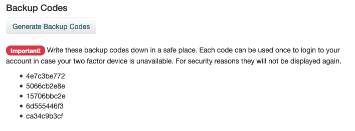
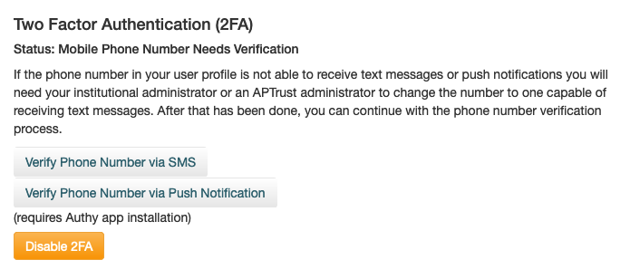
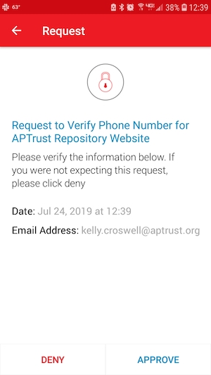
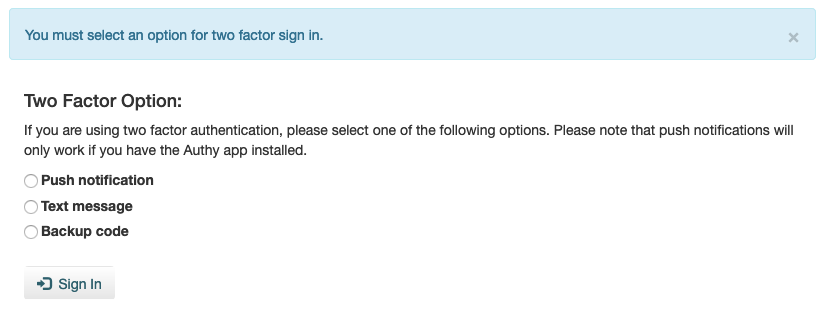

Two-Factor Authentication
Pharos supports two-factor authentication for users and institutions who want an extra layer of security. Two Factor Authentication is required for institutional administrators in both the production repository and the demo repository, since institutional admins have the ability to delete materials. It is not required for institutional users, however we recommend that all users enable it.
Tip
Two-factor settings are separate on the production and demo repositories. Enabling or disabling this feature in the Pharos production system has no effect on the demo system and vice-versa. You'll have to set your preferences separately on each system.
Enabling Two-Factor Authentication
Institutional users can enable two-factor authentication for themselves. Institutional administrators can require it for all users at their institution, thereby forcing them to enable it. Institutional users who enable two-factor auth for themselves can choose to disable it later. When an administrator enables two-factor auth for their institution, users cannot opt out or disable the setting.
Enabling Two-Factor for Yourself
To enable two-factor authentication for yourself, click the Enable 2FA button on the screen you see immediately after login and follow the onscreen instructions.

Update Your Mobile Number
If your phone number isn't up to date, you'll need to update it in the confirmation dialog. Enter the number of your mobile phone to receive two-factor authentication codes via text message or push notification.

Copy Your Backup Codes
Before proceeding any further, copy your backup codes to a safe place on your computer or phone. These codes are valid for one-time use, and can help you log in to Pharos when you're not able to authenticate via text message or push notification.

Verify Your Mobile Number
Click one of the two buttons to verify your mobile number. Choose Verify Phone Number via SMS to receive a text message. If you already have the Authy app installed, choose Verify Phone Number via Push Notification.

You should receive a text message or push notification within a minute or so. If you chose the text/SMS option, enter the code you received in the text message into the verification field in Pharos.
NEED SCREENSHOT
If you have Authy installed on your phone and you chose to verify via push notification, click the Approve button when the Authy verification request appears.

Enabling Two-Factor for Other Users or Your Entire Institution
Institutional administrators can require two-factor authentication for specific users at their institution, or for the institution as a whole.
To enable two-factor auth for a specific user:
-
Choose Admin > Manage Users from the menu in the upper right corner of the page.
-
Click the green Enable 2FA button to the right of the user for whom you want to enable two-factor auth.
To require two-factor auth for your institution:
-
Navigate to the home page by clicking the APTrust logo in the upper left hand corner.
-
Click the green Enable Mandatory Institution-Wide 2FA button.
Choosing Your Second Factor
After enabling two-factor authentication, you'll be presented with an option to verify your identity each time you log in to Pharos. Choose the option that best suits your needs, and remember that if you don't have access to phone service, you can use each of your backup codes once.

Grace Period for New Users
New users have a grace period during which they will be prompted to enabled two-factor authentication. On the production repository, this grace period is 30 days long. On the demo repository, this grace period is 90 days long. The grace period begins when the user's account is created. It applies to all users for whom two-factor auth is required (institutional administrators and institutional users for whom two-factor auth has been required at their institution).
If You're Locked Out
If you can't log in and you don't have access to any valid backup codes, contact help@aptrust.org.